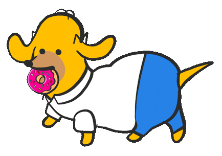
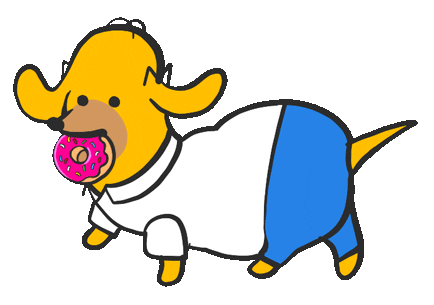
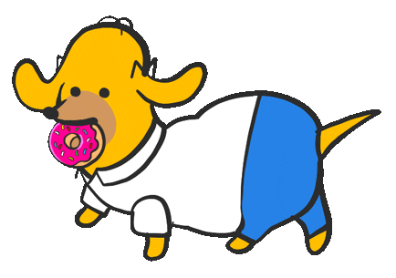
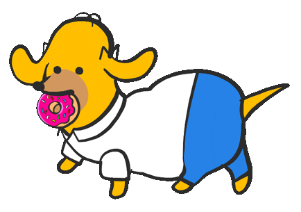
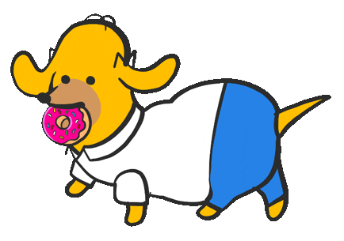

Loteria dos Simpsons

Ajude Homer a ganhar na loteria advinhe os números
Digite seu primeiro número:
Digite seu segundo número:
Digite seu terceiro número:
Digite seu quarto número:
Digite seu quinto número:
Digite seu sexto número:
Advinhar

 


